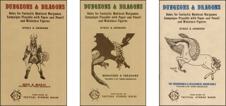

Introduction |
|---|
Dungeons and & Dragons, commonly abbreviated as D&D, is a role-playing game. Originally invented in 1974 by Gary Gygax as a way to tell group stories, it is now played all aross the world. This site will give brief history of the game, overveiw what might occur in a play session, and provide details and links to get or use the game. |
History of D&D |
|
|---|---|
Dungeons and Dragons was first published in 1974 by TSR as a slightly modified version of the game Chainmail which was also designed in part by Gary Gygax. Chainmail was a miniatures wargame in which players controlled a military formation, and could engage in tactical combat on a model battlefield. D&D changed the game by allowing players to control a single characer, with which they could go on an adventure. There have been several editions of D&D since 1974, |
 Covers of the three pamphlets of the first edition |